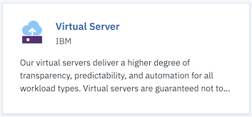
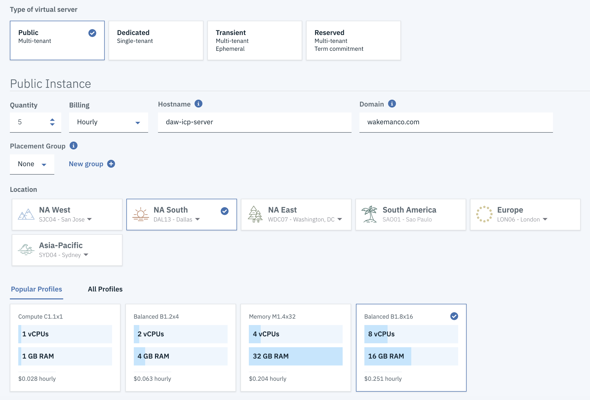
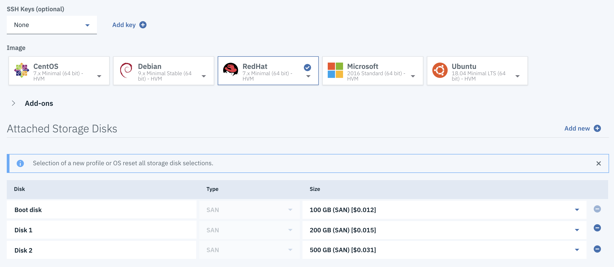
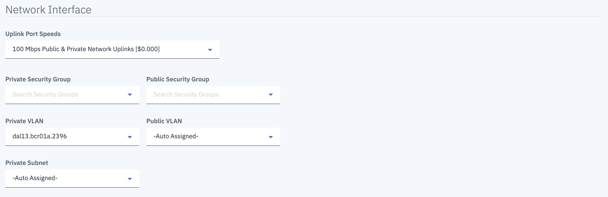

Create the Virtual Machines
Provision 5 virtual machines with this configuration:
- RHEL Minimal (7.x)
- 8 CPU / 16G Mem
- 100GB Boot Disk
- 200GB Disk 1
- 500GB Disk 2
Tip
You can create all 5 VMs at the same time with the same configuration by using the Quantity field on the order page.
To create virtual machines:
- Login to your IBM Cloud account.
- Click the
Create Resourcebutton on the Dashboard page - Click the Virtual Server tile.
 - Specify the following settings for your Virtual Server Instance:
- The
Public Virtual Servertile should be selected; clickContinue. - Choose
Publicas the type of virtual server - Set the
Quantityto5 - Specify values for
Host NameandDomain - Choose the location and data center of your choice
- Choose the
Balanced B1.8x16profile. You many need to choose theAll Profilestab to find it. - Choose
Red Hatas the Image (take the default7.x Minimal (64-bit) - HVM). Make sure you actually cick theRed Hatbox and that it has a blue outline and the blue checkmark. - In the
Attached Storage Diskssection, click theAdd Newbutton twice to create two new disks, namedDisk 1andDisk 2 - change the size of the disks:
Boot Diskto100 GBDisk 1to200 GBDisk 2to500 GB
- The
When finished the screen should look like this:
  
- Click the checkbox to acknowledge that you have read and agree to the third party agreements and click
Create.
Note
These values for host name and domain do not have any affect on the actual host name and domain defined
inside the virtual machines. They are just labels and can be changed at any time.
Note
When you chose a quantity greater than 1 your virtual machines may have an added sequence number in their host names. Don't forget that you can change the names of your virtual machines after they are created. The name of your VM's in the IBM Cloud Infrastructure section are just for your own reference. It's best practice to name each of them with some indication on what role they will play in your cluster, such as (master, mgmt, worker, va, proxy)
Tip
You will need to transfer a very large file to your master node. Once your machines are created, you can initiate this transfer. You will need to know the password for root, which you can get from the Passwords tab on the Device Details page.
To transfer the file open a terminal window on your host machine, navigate to the directory where the file is stored and execute this command:
scp ibm-cloud-private-x86_64-3.1.1.tar.gz root@<your Master node IP>:/tmp
The scp command is the Secure File Transfer command.
When your machines are provisioned it will be helpful for you to collect some information together that you will need later. The table below is an example of what you should collect. The hostnames can be whatever values you want. The passwords are for the root user and can be obtained on the Passwords tab of the Details page for your device.
| Machine Role | hostname | IP Address | Password |
|---|---|---|---|
| Master/Proxy/Boot | my-icp-master | xxx.xxx.xxx.xxx | xxxxxxxx |
| Management | my-icp-mgmt | xxx.xxx.xxx.xxx | xxxxxxxx |
| VA | my-icp-va | xxx.xxx.xxx.xxx | xxxxxxxx |
| Worker1 | my-icp-worker1 | xxx.xxx.xxx.xxx | xxxxxxxx |
| Worker2 | my-icp-worker2 | xxx.xxx.xxx.xxx | xxxxxxxx |
Note
I recommend you use the Public IPs for all your virtual machines. You can use the Private IP for everything except the PROXY node if you really want to, but you must be consistent in all the next steps for everything to work properly.